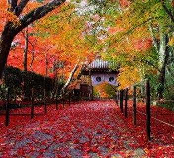
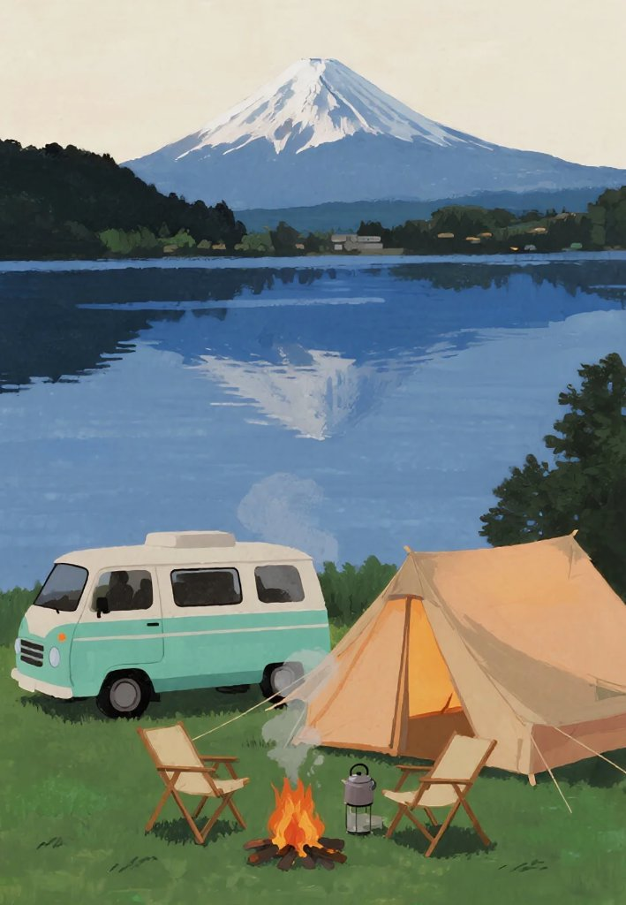
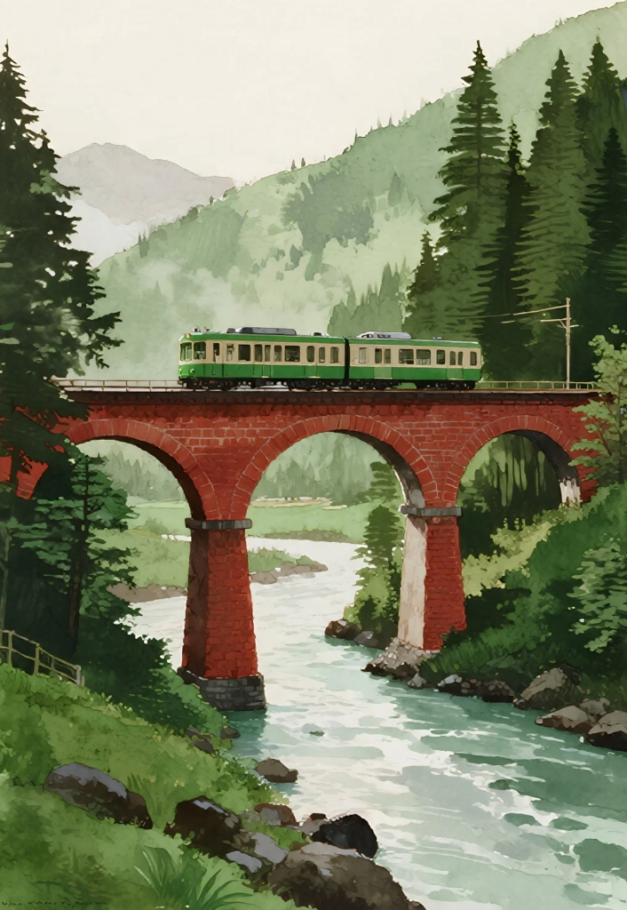
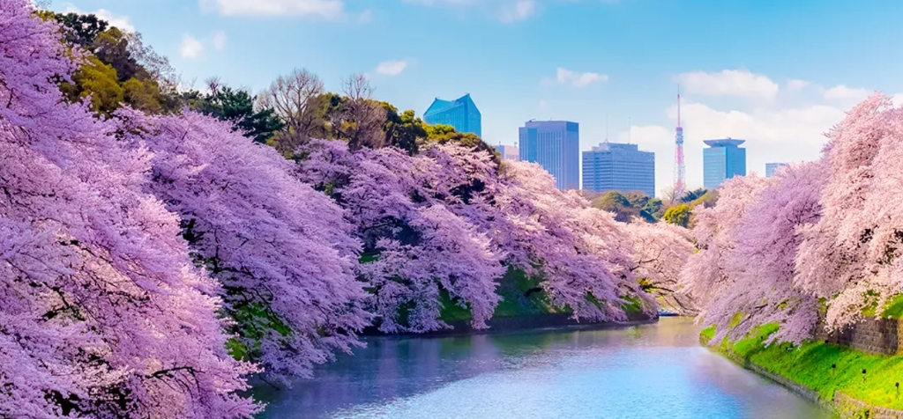
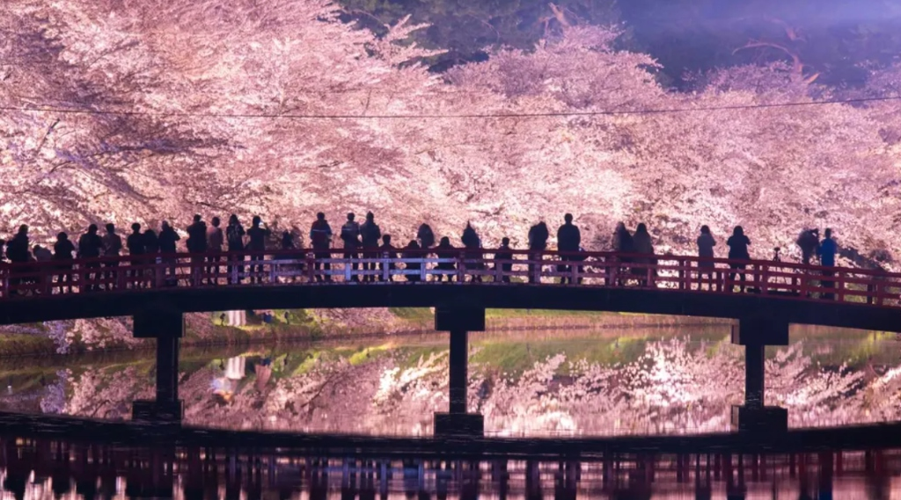

分享現場拍攝的櫻花/花火/雪況，支援手機直傳並自動讀取相片 EXIF 拍攝時間與最近景點！

搭火車不只是移動，而是自由行最極致的情懷。從萌翻全場的「POKÉMON with YOU 皮卡丘列車」、九州「由布院之森」與「雙星4047」，到近鐵頂級按摩椅特急「志摩之風」——收錄全日本夢幻觀光列車圖鑑、大件行李座位預約規定與手繪手稿路線指南。
長寬高三邊總和大於 160 公分（約 28-32 吋箱）必須預約特大荷物席。160 公分以下（登機箱）免預約，可放頭頂行李架或座位前。
購票或持 JR Pass 劃位時勾選「特大荷物スペースつき座席」，費用 0 元。若未事先預約直接帶上車，車長將現場加收 1,000 日圓手續費。
空間位於指定車廂最末排座椅背後的凹槽空間，推拉平放免抬高。部分新型號（東海道/北陸新幹線）玄關處另設有感應式密碼行李鎖櫃。
哺乳媽媽、換尿布或身體不適者，告知乘務員即可免費解鎖多功能室。奇數車廂皆設有無障礙免治馬桶，各座位下方皆有充電插座。
 ⚡ 東北・大船渡線 ｜ 皮卡丘號
2
節編組
⚡ 東北・大船渡線 ｜ 皮卡丘號
2
節編組
全車滿滿皮卡丘！1號車為黃色皮卡丘花紋交流坐席，2號車整節改造成「皮卡丘遊樂場」，中央有巨大趴姿皮卡丘玩偶供乘客擁抱合照，小朋友與寶可夢迷的終極夢想！
 🌲 九州久大本線 ｜ 森林別墅
5
節編組
🌲 九州久大本線 ｜ 森林別墅
5
節編組
水戶岡銳治經典傳奇！古典翡翠綠車身、高地板全景展望車廂。行經慈恩瀑布慢速行駛，車上販售限定由布院老料亭便當與大豆冰淇淋。
 🌊 西九州海景 ｜ 純白沙龍
3
節編組
🌊 西九州海景 ｜ 純白沙龍
3
節編組
全日本最新海景列車！純白車身綴以金黃星芒，2號車特別設有「Lounge 40」全景沙龍吧檯，直面平靜如鏡的大村灣夕陽落日。
 🐶 熊本阿蘇火山 ｜ 小黑狗狗親子
4
節編組
🐶 熊本阿蘇火山 ｜ 小黑狗狗親子
4
節編組
全車繪製 101 隻原創吉祥物黑狗「KURO」！3號車特設白木木球池球池、繪本圖書館與親子白色「白鳥座席」，家庭親子日本鐵道第一指名。
 💨 浦島太郎傳說 ｜ 噴白煙海景列車
2
節編組
💨 浦島太郎傳說 ｜ 噴白煙海景列車
2
節編組
黑白雙色大膽塗裝！靠海一側為白色，靠山一側為黑色。抵達時車門上方會噴出如浦島太郎打開寶盒時的白色煙霧，直奔指宿砂浴名湯。
 🐦 雙色翠鳥 ｜ 球磨杉森林車廂
2
節編組
🐦 雙色翠鳥 ｜ 球磨杉森林車廂
2
節編組
以球磨川棲息的翠鳥命名！1號車為深藍翡翠，2號車為翠綠山翡翠。車內大量使用人吉球磨產百年杉木與檜木，散發天然森林芳香。
 🎷 天草南蠻爵士 ｜ 彩繪玻璃酒吧
2
節編組
🎷 天草南蠻爵士 ｜ 彩繪玻璃酒吧
2
節編組
以16世紀天草南蠻文化為主題！車身黑金配色，車內播放爵士名曲《Take the 'A' Train》。吧檯嵌以華麗教堂彩繪玻璃，供應天草晚柑調酒。
👑 日本移動美術館 ｜ 奢華寢台頂點
7
節編組
全日本最難預約的夢幻奢華寢台！酒紅色高光亮漆車身、大川組子木工藝術、有田燒手工瓷器臉盆。全車僅接待少數貴賓，頂級主廚隨車料理九州在地珍饈。
✨ 日光東照宮 ｜ 和風組子幾何
6
節編組
極致和風幾何美學！車窗融入日光東照宮「鹿沼組子」六邊形木工藝術。1號車設有專屬「駕駛室客廳沙龍（Cockpit Lounge）」，供應日光在地精釀生啤酒。
 ♨️ 新宿直通箱根 ｜ 玫瑰朱紅全景席
7
節編組
♨️ 新宿直通箱根 ｜ 玫瑰朱紅全景席
7
節編組
箱根溫泉經典之王！車頭設置 16 席超巨大無遮蔽「前向全景展望席」，駕駛室移至二樓上方，車窗高度大幅擴展 30 公分，天氣晴朗可遠眺富士山。
💎 全車綠色頭等車 ｜ 伊豆藍海餐廳
8
節編組
全車全席「綠色車廂以上」的超頂級配置！以伊豆蔚藍海水為設計靈感，天花板有天窗天頂玻璃。4號車為移動拉麵麵食餐車，由米其林星級主廚監製。
 🗻 直面富士山 ｜ 水戶岡深紅沙龍
3
節編組
🗻 直面富士山 ｜ 水戶岡深紅沙龍
3
節編組
行駛在富士山腳下的朱紅精品列車！1號車特別設計為圓形木桌沙龍，提供由高原飯店主廚監製的「富士山特製甜點套餐」，窗外是大片壯麗富士山山體。
🛸 妹島和世設計 ｜ 超巨大落地窗沙發
8
節編組
建築大師妹島和世操刀設計！流線銀色子彈頭車身，車窗高達 135 公分幾乎直達地面。車內是像客廳一樣溫暖包覆的黃色大沙發座椅。
 🎨 逗趣富士山 ｜ 165隻萌系彩繪
3
節編組
🎨 逗趣富士山 ｜ 165隻萌系彩繪
3
節編組
車身上畫滿 165 種不同表情與裝扮的富士山卡通角色！車頭設有全景展望席，小朋友的最愛，充滿童趣的富士山鐵道體驗。
 🌼 房總花海 ｜ 嚕嚕米油菜花鐵道
1-2
節編組
🌼 房總花海 ｜ 嚕嚕米油菜花鐵道
1-2
節編組
春季全日本最夢幻黃金花毯！列車行駛在千葉房總半島鄉村，兩旁開滿一望無際的黃金油菜花與粉嫩櫻花，嚕嚕米聯名彩繪極致浪漫。
👑 關西名湯 ｜ 電動按摩椅頭等艙
6
節編組
日本私鐵豪華天花板！全車配備柔軟黃色真皮「電動按摩座椅」、雙層海景餐車咖啡座，點一份現做松阪牛咖哩飯，直通伊勢神宮與志摩溫泉。
🍷 奈良吉野山 ｜ 古典深藍沙龍
3
節編組
復古宮廷古典美學！深藍金線烤漆車身、車內播放德弗札克《新世界交響曲》。2號車為高級胡桃木酒保吧檯，供應主廚特製甜點與在地吉野葛餅。
🍁 京都嵐山 ｜ 保津川峽谷露天車廂
5
節編組
復古柴油機車行駛於保津川清澈溪谷！特別推薦「5號車富貴號 (The Rich)」，整節車廂為完全無窗戶的露天開放設計，春櫻秋楓微風拂面絕景。
⛩️ 京都洛北 ｜ 金色橢圓神秘之門
1-2
節編組
京都洛北絕景電車！「HIEI」車頭鑲嵌巨大金色橢圓形神秘光環；「KIRARA」則擁有面向車窗的一整排全景景觀座席，穿過貴船紅葉綠蔭隧道震撼無比。
🎋 枯山水庭園 ｜ 免特急券神級電車
6
節編組
車廂內竟然有一座真正的枯山水庭園！每節車廂分別以京都「春夏秋冬、初秋、早春」六大時令為主題，設有塌塌米座椅與圓形障子窗，只需一般車票即可搭乘！
🍱 日本三景天橋立 ｜ 行動懷石料理
1
節編組
水戶岡銳治操刀黑金古典列車！整節車廂為高級移動餐廳，穿越日本三景天橋立。車上享用在地若狹灣鮮魚、松葉蟹與丹後時令旬味餐點。
🌊 五能線奇蹟 ｜ 日本海夕陽三味線
4
節編組
全日本公認此生必搭海景鐵道！分為「青池、橅、熊啄木鳥」三款編組。行駛在驚濤駭浪的日本海懸崖邊際，車內有傳統津輕三味線現場激昂演奏。
🚂 貴婦人蒸機 ｜ 阿賀野川綠意峽谷
7
節編組
黑色鋼鐵巨獸重裝鳴笛！由 C57-180 機關車牽引大正浪漫木造車廂。4號全景玻璃展望車免費開放，津川站加水點檢 15 分鐘是合照黃金時機。
👘 北陸極致美學 ｜ 加賀友禪輪島塗
2
節編組
以加賀傳統婚嫁習俗「花嫁之簾」為靈感！車身繪製輪島塗漆器花紋與加賀友禪絲綢圖樣。車內設有八個半開放日式屏風雅座，隨車提供加賀和菓子茶席。
🍶 新潟銘酒特選 ｜ 移動清酒酒吧
3
節編組
為美酒愛好者誕生的移動居酒屋！行經日本米酒之鄉新潟，2號車設有整排清酒服務吧檯「藏守 (Kuramori)」，現場提供新潟嚴選地酒試飲與爵士樂演奏。
❄️ 北海道極寒蒸機 ｜ 丹頂鶴濕原
5
節編組
全北海道唯一的現役蒸汽火車！每年僅在 1 月至 3 月極寒銀白雪季行駛，穿梭在釧路濕原銀白林間，沿途可見野生丹頂鶴與蝦夷鹿。
🌸 夏季限定花海 ｜ 開放原木長椅
3
節編組
北海道夏天的代名詞！每年 6 月至 9 月行駛，專門停靠夏季限定「薰衣草花田臨時站（Lavender Farm Station）」，步行 7 分鐘即達富田農場彩色花毯。
🧊 鄂霍次克海 ｜ 流冰白色大平原
2
節編組
世界少數可隔著火車車窗看到海面流冰的列車！每年 2 月流冰盛季行駛，停靠北濱站時可登上瞭望台俯瞰整片白色冰洋，車廂貼有流冰天使插畫。
🌅 神隱少女下灘站 ｜ 茜色夕陽列車
3
節編組
日本四國最受歡迎的美食觀光列車！途經全日本離海最近的傳奇無人車站「下灘站」。夕陽西下時茜色天光染紅海面，車上享用愛媛在地溫潤法式下午茶。
⛩️ 山陰神話神域 ｜ 出雲大社直通
2
節編組
以《古事記》山陰神話為設計靈感！深藍車身象徵日本海，車頂飾以白雲。車內融入鳥取智頭杉、島根石見瓦與出雲勾玉裝飾，直達結緣聖地出雲大社。
🚂 九州鐵道傳奇 ｜ 8620形大正蒸氣機車
3
節客車 ＋ 58654 號蒸氣機車
全日本現役最古老的蒸汽火車機車頭！大正時代製造的 8620 形 58654 號機車，全木造懷舊車廂設有雙向全景展望休息室與復古自助餐吧台，黑煙汽笛響徹九州平原。
 🌋 南九州薩摩 ｜ 漆黑古典木造車身
2
節編組
🌋 南九州薩摩 ｜ 漆黑古典木造車身
2
節編組
以南九州薩摩武士的漆黑盔甲為靈感打造！車身採用沉穩純黑烤漆，車內則全室鋪設溫潤明亮的天然櫻桃木，沿著錦江灣遠眺雄偉櫻島火山噴煙。
🌲 日本三大車窗 ｜ 螺旋折返線 (Switchback)
2
節編組
鐵道迷心中的封神之作！穿越日本三大車窗美景之一的矢岳高原，遠眺霧島連峰雄姿。更是全日本唯一同時擁有螺旋線 (Loop) 與折返線 (Switchback) 的山嶽鐵道。
🚂 關東蒸氣霸主 ｜ D51 蒸氣火車一號機
D51
498 機車 ＋ 6 節客車
關東地區最具代表性的正統蒸汽火車！由著名「D51 498 (小蒸汽霸王)」牽引，一路穿過利根川峽谷、赤城山與谷川岳山麓，車掌吹哨與震撼汽笛令人熱血沸騰。
🌊 伊豆海景階梯席 ｜ 黑船電車 ＆ 金目鯛彩繪
7
節編組
坐擁相模灣最震撼海景的平民觀光電車！最特別之處在於面向大海方向設置了「劇院式階梯面海全景沙龍坐席」，且僅需普通車票即可免費自由搭乘，CP值封頂！
🌴 房總半島南國風 ｜ 太平洋海風渡假特快
9
節編組
連結東京都會與溫暖房總半島的濱海特快！以「陽光黃、海洋藍、海濱沙白」塗裝，穿過東京灣沿岸、南房總花卉公路與鴨川海洋世界，充滿度假風情。
🍷 水戶岡銳治設計 ｜ 真田六文錢 ＆ 信州地酒
3
節編組
行駛於輕井澤與長野之間的極致美食列車！由水戶岡銳治設計，以戰國名將真田幸村的赤備深紅軍裝為車體主色，車內採用長野檜木與紙障子，享用信州和牛法式料理與地產紅酒。
🦅 名阪商務之王 ｜ 高級真皮後殼傾斜座椅
6
/ 8 節編組
顛覆日本城際特急體驗的赤紅美學旗艦！全車配備專利「Backshell 後殼式座椅」，後仰椅背完全不影響後座乘客空間。頂級 Premium 車廂擁有高地台真皮電動按摩椅與現磨咖啡吧台。
🦌 奈良天平美學 ｜ 紫金雙色沙龍與對坐包廂
4
節編組
以奈良古都天平時代的代表色「青丹紫」與金色正倉院寶物花紋打造！全車僅容納 84 位乘客，配置斜向觀景雙人座與半開放四人沙龍包廂，直通大阪、奈良與京都三都。
🌲 日本三景海景 ｜ 水戶岡銳治松樹意象
1
節獨立觀光車廂
由水戶岡銳治以天平之松為靈感設計！朱紅色的木造復古單節車廂，行駛在由良川鐵橋時有如在海面上懸空飛行，被封為「神隱少女海上列車真實版」！
🌸 2024全新登場 ｜ 頂級和風奢華觀光列車
3
節編組
JR西日本於 2024 年底震撼推出的最新最高階觀光列車！以「花之光輝」為概念，行駛於北陸與北近畿海岸，1號車首創超頂級「スーペリアグリーン (卓越綠色包廂)」，將傳統漆器工藝融入摩登座艙。
✨ 宮澤賢治童話 ｜ 全世界唯一車載星象儀
C58
239 號機車 ＋ 4 節星空客車
以宮澤賢治童話名作《銀河鐵道之夜》為靈魂藍本！深藍色星空車身繪滿星座神話，車內不僅完整重現大正昭和復古煤氣燈氣氛，更是全球第一台在客車內設有「光學天象儀星空投影館」的夢幻列車。
 🏔️ 北阿爾卑斯連峰 ｜ 巨大全景落地玻璃展望窗
2
節混合動力編組 (HB-E300系)
🏔️ 北阿爾卑斯連峰 ｜ 巨大全景落地玻璃展望窗
2
節混合動力編組 (HB-E300系)
穿梭於雄偉北阿爾卑斯雪山下的環保油電混合觀光列車！擁有超大尺寸落地觀景車窗，座席間距高達 1,200mm 比新幹線綠色車廂更寬敞。姨捨站更可俯瞰獲選日本三大車窗的善光寺平原夜景。
🌊 能登半島海岸 ｜ 輪島塗工藝 ＆ 辻口博啟甜點
2
節編組
承載著能登世界農業遺產里山里海精神的治癒系列車！車身採用深藍色天然漆器質感，車內展示田鶴濱建具與輪島塗傳統工藝品，行駛至七尾灣牡蠣養殖棚時特別慢速停留，附贈世界級甜點大師辻口博啟特製甜點。
 🦑 昭和懷舊暖爐 ｜ 炭火現烤乾魷魚 ＆ 津輕地酒
柴油機車
＋ 2 節炭火暖爐老客車
🦑 昭和懷舊暖爐 ｜ 炭火現烤乾魷魚 ＆ 津輕地酒
柴油機車
＋ 2 節炭火暖爐老客車
全日本冬季最溫暖有人情味的奇蹟火車！每年 12 月至隔年 3 月，車廂內點燃傳統鑄鐵達摩炭火暖爐，乘客一邊喝著津輕清酒，一邊看乘務員在大火爐上現烤乾魷魚，窗外是漫天風雪的青森津輕平原。
🦩 日本最大濕原 ｜ 開放式車窗野生動物巡禮
綠金柴油機車
＋ 5 節木造開放客車
穿梭在日本最大國家公園「釧路濕原」腹地之中的慢速景觀列車！車窗可自由向上推開呼吸濕原原始芬芳，行駛至蛇行釧路川與丹頂鶴棲息地時會特意慢速滑行，蝦夷鹿與白尾海鵰常在窗外現身。
 🌏 地球探索鐵道 ｜ 日本最東端納沙布岬門戶
1-2
節深紅荒野單行車
🌏 地球探索鐵道 ｜ 日本最東端納沙布岬門戶
1-2
節深紅荒野單行車
獲封「通往地球盡頭的鐵道」！穿越厚岸湖生蠔養殖水域、別幌濕原與落石海岸。一路上只有深邃的太平洋懸崖、無邊無際的草原與奔跑的野生鹿群，直達日本最東端車站「東根室站」。
🎋 四國千年歷史 ｜ 大步危吉野川秘境美饌
3
節編組
穿越四國千年歷史與險峻大步危溪谷的頂級觀光美饌列車！以春萌之綠、夏清之藍、秋熟之紅四季塗裝三節車廂，行經祖谷溪谷與吉野川翠綠急流，享用讃岐牛與德島阿波尾雞精緻懷石。
⚓ 幕末阪本龍馬 ｜ 太平洋土佐黑潮美味
2
節編組
跟隨明治維新英雄坂本龍馬的足跡，奔向廣闊太平洋！1號車「KUROFUNE (黑船)」象徵開國浪潮，2號車「SORAFUNE (宇宙船)」展現未來夢想。一邊眺望土佐灣浩瀚黑潮，一邊品嚐土佐炙燒鰹魚。
🍋 瀨戶內海島波 ｜ 尾道千光寺 ＆ 廣島地酒吧
2
節編組
沿著日本平靜如鏡的瀨戶內海蜿蜒而行！列車名稱結合法語與拉丁語，意為「還有很多驚喜」。深海藍車身鑲嵌金線，車內附設專屬酒吧供應廣島琴酒與瀨戶內檸檬甜點。
全車滿滿皮卡丘！1號車為黃色皮卡丘花紋交流坐席，2號車整節改造成「皮卡丘遊樂場」，中央有巨大趴姿皮卡丘玩偶供乘客擁抱合照，小朋友與寶可夢迷的終極夢想！
🗻 富士山直達特快 ｜ 新宿 ➔ 河口湖免轉車
3
節編組 (E353系)
全日本最搶手的富士山朝聖特快！自新宿直通河口湖完全無需在大月換車。車窗外雄偉富士山迎面而來，全車指定席配備先進座位頂部紅黃綠燈號系統與全席插座。
穿梭日本列島的時速 320 公里高速動脈！詳細收錄東海道、山陽、東北、北陸、上越、山形、秋田與九州 8 大新幹線系統。專門整理多功能室 (哺乳・身體不適)、特大行李放置席 (161~250cm)、嬰兒推車擺放、全席充電插座與各車艙等級配置圖。
🚄 日本第一黃金動脈 ｜ N700S / N700A
16
節編組 ｜ 時速 300km/h
串聯日本三大都會區的最高班次密度大動脈！最新旗艦 N700S 車型全車各座位配備充電插座，平穩安靜。
⚡ 全日最高時速 320km/h ｜ E5系 / H5系
10
節編組 ｜ 青綠粉紅白
穿越青函海底隧道，直奔北國大地！搭載頂級「Gran Class 特等車廂」，全車指定席，高速疾馳雪國。
🏯 2024延伸通車至敦賀 ｜ E7系 / W7系
12
節編組 ｜ 和風銅藍金
以日本傳統漆藝與北陸和風天藍為設計主調，直通度假勝地輕井澤、日本阿爾卑斯長野與古都金澤。
⛷️ 越後湯澤滑雪直達 ｜ E7系 朱鷺色
12
節編組 ｜ 全車全席插座
冬季滑雪客的夢幻列車！直達 GALA 湯澤站下車直接進雪場換雪具，全車系更新為 E7 型配備全席充電。
🍒 2024全新投入營運 ｜ E8系 翼號
7
節編組 ｜ 時速 300km/h
2024 最新 E8 系以藏王白與山形紅花黃彩繪，時速提升至 300km/h，直達銀山溫泉與藏王樹冰門戶。
👹 茜紅流線美學 ｜ E6系 小町號
7
節編組 ｜ 與E5併結320km/h
全車指定席！與綠色 E5 隼號在盛岡站上演經典的機械併結與分離，直達陸奧小京都角館與田澤湖辰子像。
🌴 水戶岡金箔木作 ｜ N700系 / 800系
6/8
節編組 ｜ 指定席2+2寬座
普通指定席即享有媲美商務艙的 2+2 超寬座位！800 系融入金箔壁畫與藺草座椅，博多到熊本僅 32 分鐘。
🌊 白紅海鷗飛翔 ｜ N700S 海鷗號 Kamome
6
節編組 ｜ 23分鐘直達長崎
2022 年全新開通！指定席配置菊花紋與獅子紋木質座艙，在武雄溫泉站對面月台無縫轉乘，博多直奔長崎港。
🎀 全球唯一限定彩繪 ｜ 500系 Hello Kitty
8
節編組 ｜ 每日限定 1 往返
大人小孩尖叫的夢幻粉紅列車！1號車「HELLO! PLAZA」展示西日本在地特產與限定商品，2號車「KAWAII! ROOM」整節為粉紅拍照打卡車廂，附設蝴蝶結大玩偶合影區！
TRIPAIRJP
飯店 5.5% 折扣 TRIPHOTEL5
在出發之前，為下一次日本慢旅預約最溫柔的票價。點選直達特價機票查詢或車站/景點周邊精選住宿：
TRIPFLYJP
(機票) ｜
TRIPHOTEL55
(飯店5.5%)

免帶裝備、拎包入住星空球型帳；開著露營車停靠在湖光山色之間。精選全日本懶人豪華露營、露營車 RV Park 車宿、富士山與北海道經典營地，整合 ToCoo! Car Rental 官方夥伴自駕方案 與 Booking.com 即時訂房跳轉，開啟最舒服的戶外自然慢旅！
免自備任何裝備，拎包即可入住！配備空調暖氣、觀星透明球型帳、專屬甲州牛 BBQ 與私人露天風呂。直接透過 Booking.com 即時預訂！
躺在床上就能看富士山晨曦與滿天星空！配備冷暖氣與獨立衛浴，附設私人檜木桶型桑拿與露天景觀風呂，晚餐享用甲州牛炭烤饗宴。
日本奢華露營巔峰代表！隱身於松林斜坡的極簡木質座艙，每間房均配備面向富士山的大露台與柴火壁爐，體驗手作煙燻野炊與早晨獨木舟。
隱身於靜謐樹林的高質感北歐風木屋群，園區附設有機自然餐廳「FUJIYAMA KITCHEN」與手作吊床吊椅，適合情侶慢活與親子家庭度假。
座落於八方尾根之巔的極致野奢！由日本頂級戶外品牌 Snow Peak 全面打造，黃昏日落香檳吧台，夜晚抬頭便是無光害壯闊銀河星海。
關西最高評價水上奢華露營！環繞池畔的漂浮蓮花帳與雨滴水上木屋，專屬獨木舟自由划行，房價包含餐飲酒水與專人露台送餐 BBQ。
關西規模最大溫泉豪華露營聚落！獨享私人戶外溫泉與無邊際視野，品嚐京都丹後海鮮與黑毛和牛炭火燒烤，夜間營火酒吧氣氛滿分。
開著露營車，走哪睡哪！提供外部電源 (AC 100V)、24小時熱水洗手間、排廢水站 (Dump Station)，結合 ToCoo! 露營車夥伴方案，體驗正統日式車宿文化。
正對富士山西麓雄偉山脊！車位附設專用充電座，道之驛提供 24 小時整潔洗手間、朝霧高原新鮮生乳冰淇淋與當地特色野菜市集。
全日本星空最美露營車宿點！夏季均溫僅 22 度的避暑天堂，車位寬敞且供電穩定，徒步 5 分鐘即可抵達天然碳酸日歸溫泉大浴場。
清晨推開車門就是十勝岳連峰與滾滾麥浪！專用露營車水電位，緊鄰美瑛市區補給便利，清晨有機會看到熱氣球緩緩升空。
距離東京市區僅 1.5 小時！停在太平洋海景第一排，夜晚伴著潮汐聲入眠。步行 3 分鐘即有活海鮮炭火燒烤市場與海景天然足湯。
無可取代的日本戶外象徵！日幣千圓背面逆富士、雙鑽石富士與廣袤大草原。簡單明瞭的營地資訊與避坑指南。
《搖曳露營》最著名朝聖起點！帳篷第一排緊鄰本栖湖碎石坡，清晨無風倒映「逆富士」絕景，夜晚滿天繁星無光害。
每年 4/20 與 8/20 前後，太陽從富士山頂正中央升起，形成奇蹟般「雙鑽石富士」湖中倒影。全平坦綠草皮，設施完善乾淨。
全日本露營愛好者一生必去一次的聖殿！360度毫無遮蔽的大草原，車輛可直接停在帳篷旁。中央現代化金屬公廁極為乾淨舒適。
茂密森林遮陽避風，初學者與家庭客的首選！園區附設免費柴燒男女露天大浴場，提供帳篷、睡袋、烤肉架全套出租與小木屋。
未經雕琢的原始野性！廣袤大地、火山湖泊、野生蝦夷鹿與紫色花田。提供簡單明瞭的營地重點與自駕租車指南。
依傍洞爺湖清澈湖面，晚上可遠眺洞爺湖溫泉街花火大會！配備供電 Auto 營位、管理棟熱水澡堂與投幣洗衣機，全平坦大草皮極為舒服。
支笏湖蔚藍清澈見底的水質，沙灘直通湖水！清晨常有野生蝦夷鹿漫步其間，巨木遮蔽形成天然綠蔭，被封為北海道最夢幻野營地。
極東邊境的自然奇蹟！步行 3 分鐘即達「夕陽之丘」俯瞰鄂霍次克海壯麗落日，徒步可抵達著名秘湯「熊之湯」，原始野生氣息滿分。
緊鄰上富良野日之出公園薰衣草山丘！7月滿山盛開紫芒，微風都是薰衣草芬芳。配備專用露營車水電席與整潔草皮自由席。
免除右駕適應與找路壓力！精選 7 人座 Alphard、10 人座 Hiace、22 人中巴，以及 ToCoo! 全日本 50+ 租車公司即時比價、完整保險制度與自駕 QA。
TRIPAIRJP
飯店 5.5% 折扣 TRIPHOTEL5
在出發之前，為下一次日本慢旅預約最溫柔的票價。點選直達特價機票查詢或車站/景點周邊精選住宿：
TRIPFLYJP
(機票) ｜
TRIPHOTEL55
(飯店5.5%)

專屬中文司機到府接送，直達富士山、箱根、京都奈良與沖繩景點；或是透過 ToCoo! 官方合作比價 租車自駕暢行日本。完整整理 保險制度 (CDW/NOC)、必帶證件、交通規則、加油停車與取還車 SOP，給您最安心的移動體驗！
帶長輩、小孩或多件大行李的最佳選擇！不必自己費心看路導航、免去右駕適應壓力。全客製行程自由上下車，直達熱門景點門口。全部方案跳轉 Klook 官方即時預訂，享中文司機、免費兒童安全座椅。
獨立航空頭等艙真皮座椅、靜音隔音玻璃。推薦 4~5 人 ＋ 4 件 28 吋大行李，長輩小孩乘坐極致舒適。
挑高車頂超大走道！推薦 6~9 人 ＋ 8 件 28 吋大行李，三代同堂採買免煩惱，行李箱隨意堆疊。
配備專業綠牌商業營業大客車司機，適合家族宗親旅遊、企業員工旅，平均分攤每人費用極為划算。
移動中的舒適小家！免訂繁瑣飯店、自帶平躺大床鋪、冷暖空調與露營電源插座。開到哪睡到哪，停靠日本全國 400+ 處官方合法 RV Park 與道之驛。
日本高速公路過路費為全球數一數二昂貴！外國旅客只要持有短期滯在護照，即可購買固定天數「無限次通行」的專用 PASS，過路費立省 40%～60%！
ToCoo! 獨家外國旅客方案！固定天數全日本高速公路無限次暢遊，適合跨多都道府縣長途自駕旅行，租車時直接連同車輛一併領取 ETC 卡。
玩遍札幌、小樽、旭川、函館、美瑛富良野必買！北海道地廣路長，單趟新千歲開往函館過路費即需約 6,000 日圓，買 HEP 連續使用 2~14 天最划算。
自駕玩福岡、熊本、阿蘇火山、別府由布院溫泉與鹿兒島的最佳選擇。提供 2~10 天天數方案，隨卡直接通過收費站紫色 ETC 通道。
前往白川鄉合掌村、飛驒高山、松本城與金澤必備！可搭配加購 NEP (名古屋都市高速) 與 AIP (愛知道路通票)，暢遊日本中部名山。
跨越本州廣島、岡山、鳥取沙丘、島根出雲大社，以及四國香川烏龍麵、德島鳴門渦潮、愛媛道後溫泉。
仙台機場出發自駕遊銀山溫泉、奧入瀨溪流、藏王樹冰首選。提供 2~14 天方案，免去東北繁複過路費計費。
圖表化整理日本行前自駕核心知識，結構清楚好讀，拒絕繁複冗長文字！
包含車禍事故緊急電話、必帶證件、導航設定、加油口訣、雪胎與兒童汽座法規。

從東京國際展示場十萬同好的澎湃熱血，到愛知吉卜力公園重現的魔女之谷、秋葉原聯名咖啡廳的限定杯墊，為你彙整日本第一手动漫行事曆與預約眉角。

穿梭在霍爾的移動城堡與千尋的食堂街。每月 10 日搶票秘笈、海外保證入園巴士一日遊套票，讓你無痛圓夢。

收錄全日本 7 大寶可夢中心、秋葉原與池袋 11 家必逛指標店（卡牌專門大樓、萬代魂商店旗艦、3,000台金氏世界紀錄扭蛋店）。
 東京・池袋
東京・池袋
 東京・澀谷
東京・澀谷
 東京・日本橋
東京・日本橋
 東京・押上
東京・押上
 千葉・船橋
千葉・船橋
 神奈川・橫濱
神奈川・橫濱
 關西・大阪心齋橋
關西・大阪心齋橋
 關西・大阪梅田
關西・大阪梅田
 關西・京都
關西・京都
 中部・名古屋
中部・名古屋
 北陸・金澤
北陸・金澤
 九州・福岡博多
九州・福岡博多
 北海道・札幌
北海道・札幌
 東北・仙台
沖繩・北谷
東北・仙台
沖繩・北谷
全日本第一家「整棟 6 層樓全為寶可夢卡牌」專門大樓！海量單卡櫃、PSA 鑑定卡專櫃、免費對戰桌，PTCG 玩家世界聖地。
元祖級連鎖卡店！遊戲王、黑白雙翼 Weiβ Schwarz、航海王單卡庫存極豐富，店員專業度極高。
挖寶天堂！海量舊彈中古寶可夢卡、早期遊戲王浮雕卡、稀有特典配布卡齊全，價格標示透明。
秋葉原最大規模對戰空間！航海王卡牌、名偵探柯南TCG超熱門，店內常態舉辦認證道館賽。
卡友公認高性價比！店內平板即時點單取卡，收購與販售週轉極快，收套牌零件必到首選。
二次元手辦殿堂！各大原型廠最新預約樣品展示，二手中古展示櫃品項透明標註等級，免稅直達。
BANDAI SPIRITS 官方全球旗艦店！巨大鋼彈立像、超合金魂、METAL BUILD 限定品現場販售。
日本模型界傳奇！可動人偶轉輪科技、精緻微縮食玩膠囊原型，雕塑細節極度震撼。
萬代官方直營扭蛋旗艦！每週最新機台搶先上架，動漫角色、微縮家電、擬真動物一應俱全。
秋葉原傳奇扭蛋老舖！四面牆全為扭蛋機，絕版老款、搞怪無厘頭扭蛋極多，零錢換到手軟。
整棟 9 層樓全球最大動漫商場！漫畫、畫冊、聲優 CD、一番賞與展演廳，二次元必拜朝聖點。
偶像追星聖地！日系偶像、2.5次元舞台劇演員生寫真、應援手燈、限量手環周邊齊聚。
坂道系與 K-POP 偶像專攻！演唱會限定毛巾、拍立得簽名照、稀有握手會周邊完全收納。
世界級復古玩具迷宮！超合金機器人、怪獸軟膠、賽璐珞原畫、昭和時代漫畫，時光倒流 40 年。
懷舊電玩博物館！整牆卡匣紅白機、SFC、N64、GB主機與復古大型街機遊戲區，老玩家狂喜。
關西 PTCG 與 MTG 核心重鎮！超過 100 席免費對戰席，全天候單卡檢索平板，出國打牌必訪。
關西最強卡牌現貨量！熱門航海王、遊戲王、黑白雙翼單卡分類清晰，天天舉辦官方認證賽事。
資深玩家推崇名店！各類集換式卡牌單卡品質極佳，BGS/PSA 鑑定卡庫存豐富，外語對應友善。
數萬件中古卡牌、動漫模型、一番賞公仔一網打盡！關西宅文化最大挖寶百貨，價格親民。
散卡價格極具競爭力！深受在地球員與留學生喜愛，門口常設高回饋卡牌扭蛋機與特價卡匣。
7 層樓專業模型商場！從五星物語 GK 雕像、Dollfie Dream 娃娃到鐵道微縮場景，專業玩家必到。
特攝迷靈魂殿堂！巨大哥吉拉胸像、假面騎士腰帶、超人力霸王公仔收藏量堪稱關西第一。
變形金剛與機器人玩家夢工廠！早期美版 G1 變形金剛、日版超合金魂珍稀現貨，品況極優。
梅田商圈扭蛋王！800 台萬代官方機台排成長廊，配合萬代官方會員集點，扭蛋控完全淪陷。
關西動漫活動大本營！聲優見面會、原畫展覽、限量特典與周邊書籍鋪貨量與東京同步。
關西最專業二手偶像館！偶像大師、LoveLive、舞台劇演員周邊分類齊全，尋找推し的最佳名所。
藏於梅田地下的傳奇店鋪！古董玩具、同人誌、懷舊遊戲機盤點齊全，店內陳列充滿賽博龐克感。
涵蓋全球最大動漫博覽、百萬人同人聖戰、GK 手辦巔峰、三大電玩展與女性向朝聖殿堂。整理慣例時間、地點會場與不可錯過的亮點！
| # | 展覽活動名稱 | 舉辦月份（慣例時間） | 舉辦地點 / 會場 | 活動亮點與特點 |
|---|---|---|---|---|
| 1 | AnimeJapan (AJ) | 每年 3 月下旬 | 東京 Big Sight (東京國際展示場) | 全球最大動漫博覽會。各大動畫官方大廠首發新作情報、超豪華聲優主舞台。 |
| 2 | Comic Market (夏コミ) | 每年 8 月中旬 (通常為週末 2 天) | 東京 Big Sight | 世界最大同人誌即賣會與 Cosplay 頂點。數十萬人次參與，限量獨立本與周邊。 |
| 3 | Comic Market (冬コミ) | 每年 12 月 30 日～31 日 | 東京 Big Sight | 跨年前夕的年末同人嘉年華，動漫迷必去朝聖盛事。 |
| 4 | Wonder Festival (冬/夏) (WF / ワンフェス) | • 冬季：2 月上旬 • 夏季：7 月下旬 |
千葉 幕張展覽館 (Makuhari Messe) | 全球最大模型、GK 手辦公仔祭典。萬代、Good Smile、海洋堂新品與原型師限定販售。 |
| 5 | Tokyo Game Show (TGS) (東京電玩展) | 每年 9 月下旬 (通常 4～5 天) | 千葉 幕張展覽館 | 世界三大電玩展之一。動漫改編遊戲、Console/手遊全球最新作試玩與聲優舞台。 |
| 6 | Animate Girls Festival (AGF) | 每年 11 月上旬 | 東京 池袋 Sunshine City | 全日本最大女性向 ACG 盛典。乙女遊戲、2.5 次元舞台劇、周邊快閃搶購主場。 |
| 7 | Jump Festa (JF) | 每年 12 月中旬 | 千葉 幕張展覽館 | 集英社年度大展。《航海王》、《咒術迴戰》等 JUMP 系漫畫原畫展、舞台與限定福袋。 |
| 8 | 日本橋 Street Festa (日本橋ストフェス) | 每年 5 月中旬 (春季) | 大阪 難波日本橋筋商店街 | 關西最大露天動漫祭典。整條大道封街化身巨型 Cosplay 嘉年華與痛車展示。 |
| 9 | 京都國際動漫節 (KyoMAF) (京まふ) | 每年 9 月中旬 | 京都 Miyako Messe (都展覽館) | 關西最大官方綜合動漫展。主打傳統京都工藝與人氣動畫聯名限定周邊。 |
| 10 | Machi★Asobi (マチ★アソビ) | 春季 (5月) / 秋季 (10月) | 德島 德島市中心・眉山周邊 | 由 ufotable 主導的戶外複合式動漫文化節。《鬼滅之刃》、《Fate》等知名動畫製作人、監督與聲優近距離互動、痛電車巡禮。 |
TRIPAIRJP
飯店 5.5% 折扣 TRIPHOTEL5
在出發之前，為下一次日本慢旅預約最溫柔的票價。點選直達特價機票查詢或車站/景點周邊精選住宿：
TRIPFLYJP
(機票) ｜
TRIPHOTEL55
(飯店5.5%)

跟隨全場球迷齊聲吶喊隊歌、七局下半漫天飛舞的金黃氣球，走進日本棒球文化的靈魂深處。為海外球迷整理 NPB 全年賽事行事曆、WBC 經典賽等國際大賽情報、熱門球場票價區間與聯盟網/Klook 保證票源。
日本東京巨蛋長年為 WBC 世界棒球經典賽小組賽與複賽之主場館。以下為台灣球迷整理最新海外觀賽、售票管道與飯店預約關鍵日程：
近距離看球星簽名、熱身賽，免費進場或銅板門票。
12 球團主場同步開打，各大巨蛋爆滿，需提前 1 個月搶票。
央聯與洋聯跨組對決，巨人 vs 火腿、阪神 vs 軟銀等夢幻戲碼。
球迷票選超人氣球星同場較勁，趣味全壘打大賽。
爭奪全日本第一最高榮譽，年度張力最極致之戰。
| 球場與所屬球隊 | 內野指定席 (S/A席) | 外野應援席 (放氣球區) | 特殊體驗 / VIP 包廂 | 推薦購票管道與分潤說明 |
|---|---|---|---|---|
| 阪神甲子園球場 (阪神虎 / 關西兵庫) |
¥4,500 ~ ¥6,500 | ¥2,000 ~ ¥3,000 | 常春藤席 / 頂級三壘包廂 |
免日本手機驗證，保證官方劃位
|
| 東京巨蛋 (讀賣巨人 / 東京文京) |
¥5,000 ~ ¥8,500 | ¥2,500 ~ ¥3,500 | 尊榮鑽石包廂 / 官方紀念毛巾席 |
附贈讀賣巨人官方紀念毛巾
|
| ES CON FIELD HOKKAIDO (日本火腿 / 北海道北廣島) |
¥4,000 ~ ¥7,500 | ¥2,200 ~ ¥3,200 | Tower 11 溫泉桑拿觀賽席 |
新千歲機場/札幌專車直達套票
|
| 福岡 PayPay 巨蛋 (軟銀鷹 / 九州福岡) |
¥3,800 ~ ¥6,800 | ¥1,800 ~ ¥2,800 | 屋頂開合勝利煙火視野席 |
搭配 E・ZO FUKUOKA 娛樂套票
|
TRIPAIRJP
飯店 5.5% 折扣 TRIPHOTEL5
在出發之前，為下一次日本慢旅預約最溫柔的票價。點選直達特價機票查詢或車站/景點周邊精選住宿：
TRIPFLYJP
(機票) ｜
TRIPHOTEL55
(飯店5.5%)
 ⚡ 15 分鐘前實拍
🌸 滿開吹雪 100%
⚡ 15 分鐘前實拍
🌸 滿開吹雪 100%
「水面已經鋪滿粉紅櫻花地毯！清晨 7 點去完全免排隊，落櫻隨風飄落美如仙境，建議走到底部天橋取景最佳！」

⚡ 今晨 08:00 實拍 🌸 滿開護城河「划船 09:00 前必須取號！清晨 7 點護城河水面無風倒影如鏡，粉紅櫻花垂入水面，太震撼了！」
 ⚡ 昨夜點燈實拍
🏮 夜間點燈中
⚡ 昨夜點燈實拍
🏮 夜間點燈中
「曹源池倒映滿山火紅與金黃，華燈初上禪意十足，推薦下午 16:30 入園，可同時欣賞夕陽與夜間點燈！」

⚡ 昨晚 19:30 實拍 🏮 下乘橋夜櫻「下乘橋夜櫻點燈與西濠春陽橋櫻花隧道，一生必看一次！外濠櫻花花筏已經初現，超級夢幻！」